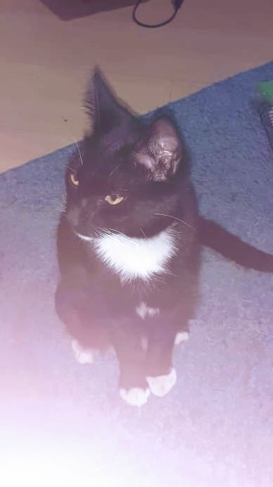

Quem eu sou
Meu nome é João Alfredo, sou estudante do primeiro período de Engenharia de Software no Integrado. Tenho 19 anos e estou começando minha jornada na área de desenvolvimento. Ao lado, você pode ver meu gato que eu uso como foto de perfil em minhas redes sociais, Luci 🐱
Habilidades em desenvolvimento
Tenho experiência com HTML e CSS, além de conhecimentos em JavaScript e Construct 3. Estou constantemente estudando e buscando evoluir minhas habilidades.
Meu Jogo
O jogo que estou desenvolvendo foi inspirado em Hollow Knight, principalmente na trilha sonora, ambientação e estilo de combate.
Contato
Whatsapp: (44)98809-2931
Discord: joaomaduro_